Beauty & Wellness Space
FRAME
FRAME is a beauty and wellness interior shaped as a calm destination for arrival, care, and retreat. Bronze surfaces, soft arches, marble, layered lighting, and tactile lounge moments create a premium spatial experience that moves from public reception into private wellness rituals.
Space Planning
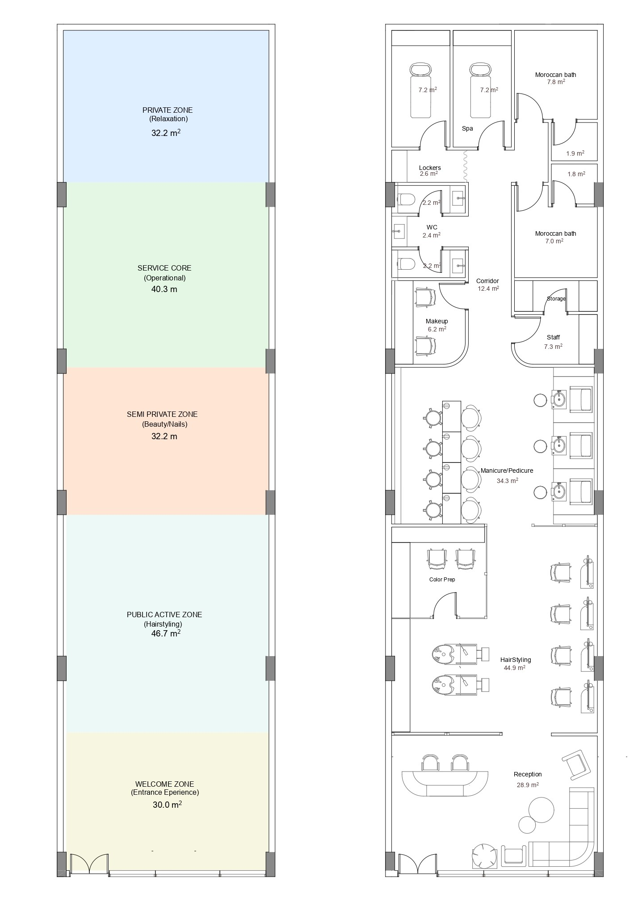
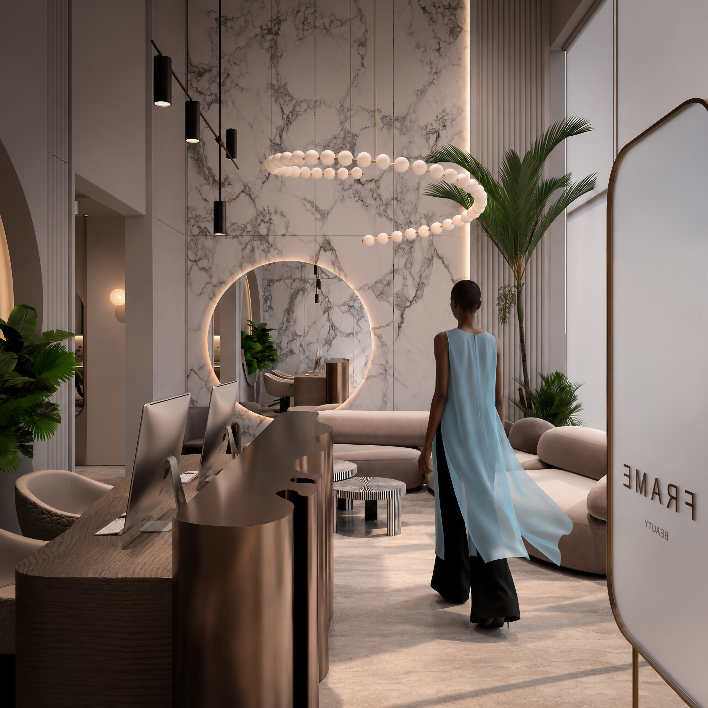

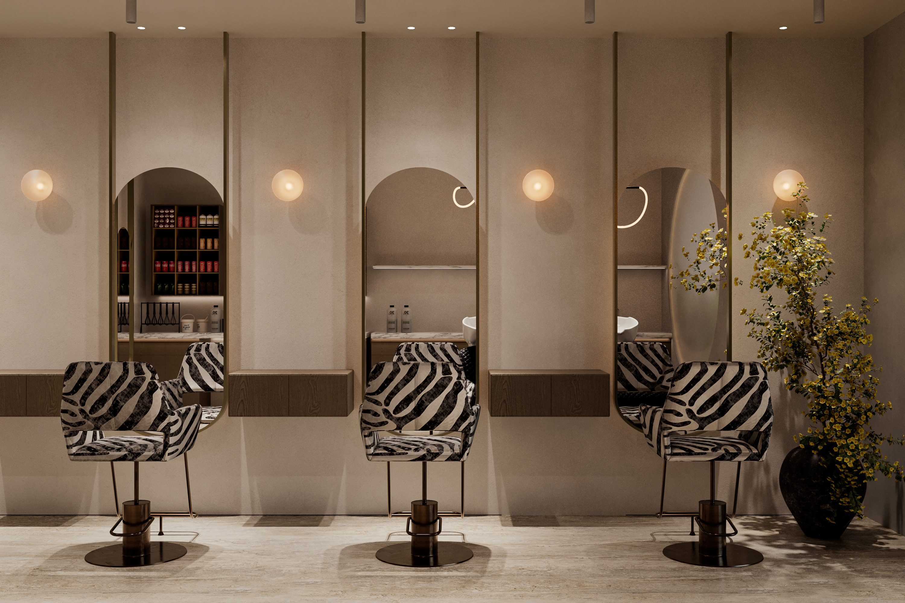
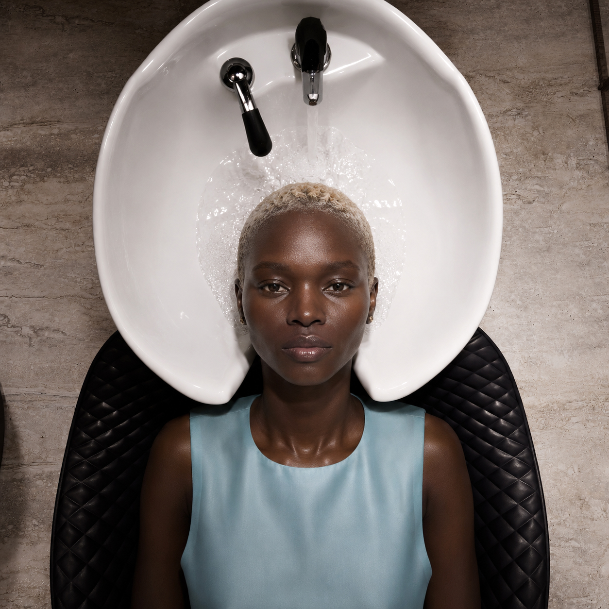
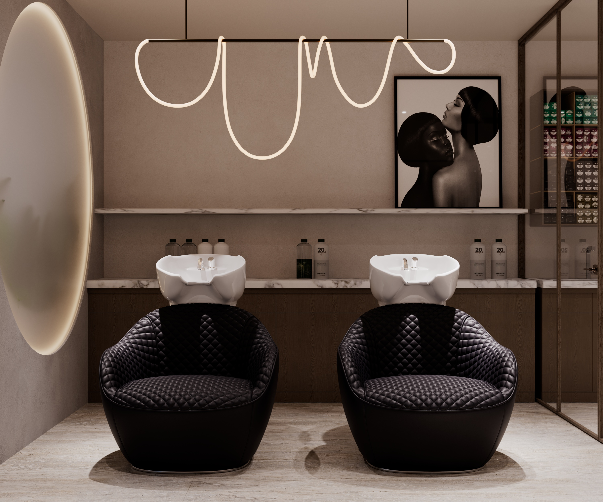
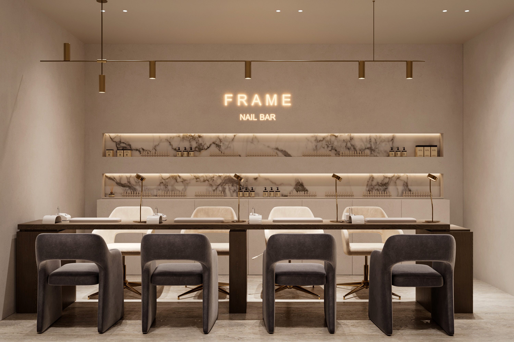
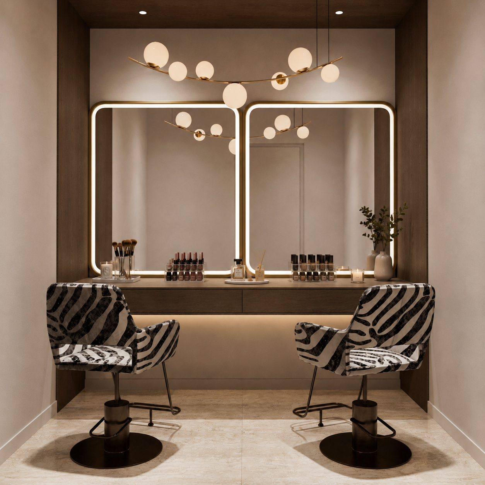
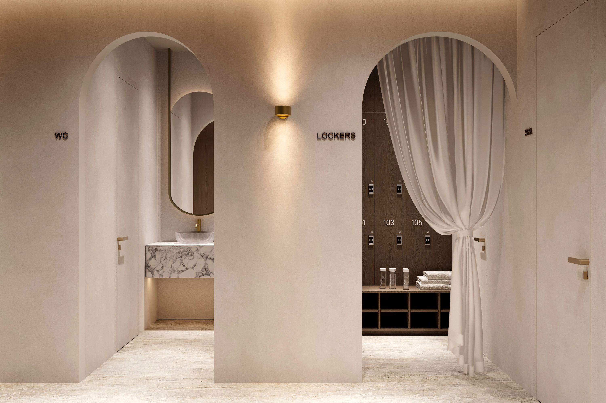
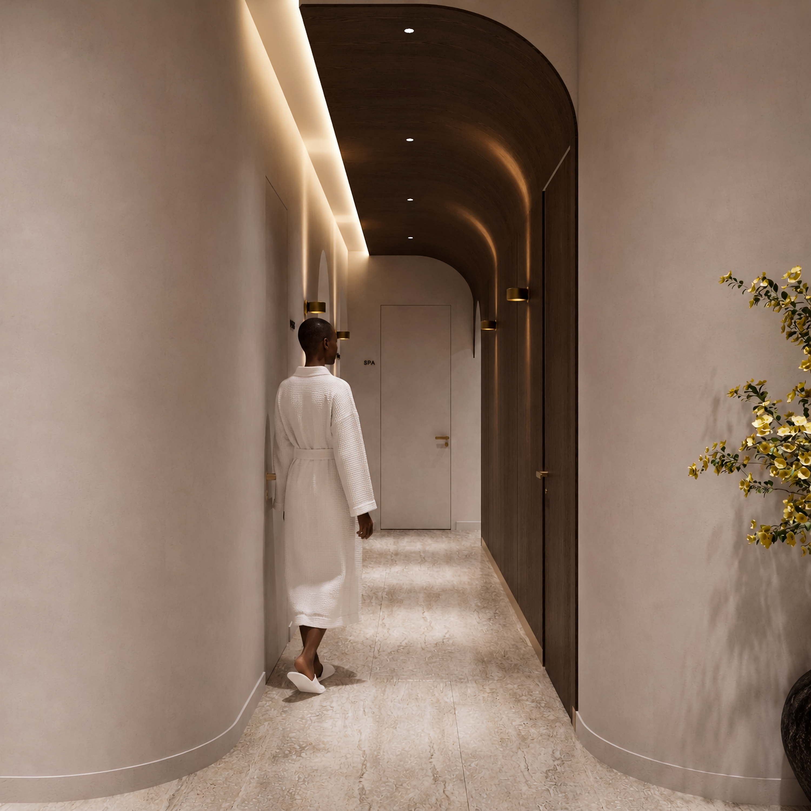
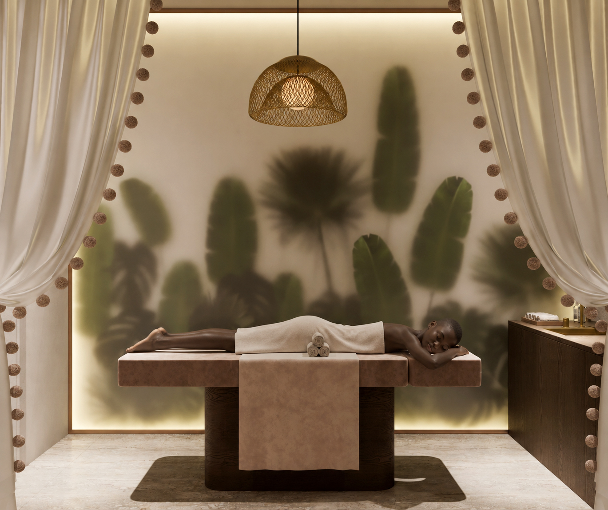
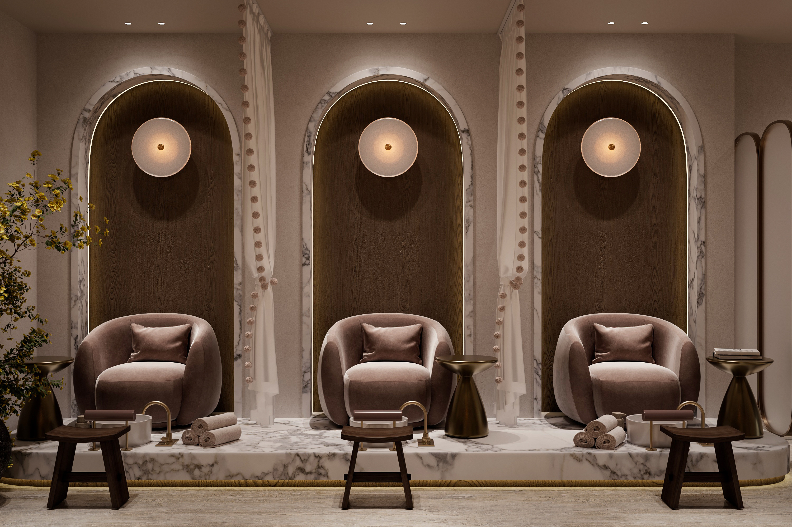